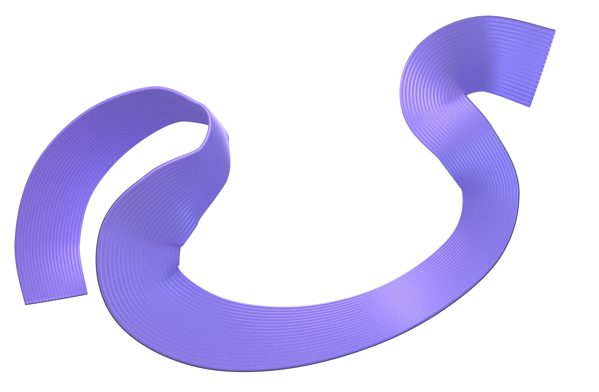

Rutta Bar
The side-mounted mic
for MacBook Air.
A USB-C microphone that sits along the edge of your Mac. Plug it in for a conversation. Slide the switch when you want to mute.


Lift the lid.
A first look at the silver Rutta Bar, nestled in its paper tray.
9-second silent film · Packaging concept renderThis browser couldn't play the film. Open the MP4 directly.
Right beside
your Mac.
The plug slips into the left USB-C port nearest the palm rest. Your Mac supplies the power, so there’s no cable across the desk.
5.5 mmTarget extension from the side of the Mac

Mute by touch.
The metal switch sits on the outer edge, right under your fingertip. A single light in the center of the top face shows when audio is going to your Mac.


The light on top breathes green while the microphone is ready.
Interactive demo. Click the switch or drag it left to mute and right to unmute.
Look
closer.
Turn Rutta Bar around, or choose a detail to see how it fits together.
What did we decide?
Two teammates settle a detail before they leave the table. In the proposed Rutta app, they’d review the decision and who owns the next step before sharing it with the team.
Friday’s user test
- Maya
- “Which prototype are we putting in front of people on Friday?”
- Leo
- “The silver one. I’ll send the updated build by Thursday noon.”
- Maya
- “Perfect. Let’s go with silver.”
Friday’s user test
- Decision
- Test the silver prototype on Friday.
- Next step
- Leo will send the updated build by Thursday noon.
Reviewed by Maya and Leo
The details.
Full specificationsSize and fit
- Reference Mac
- 13-inch MacBook Air (M4)
- Exposed length
- Approx. 26 mm along the side
- Side extension
- 5.5 mm design target, measured from the side wall
Clearance around neighboring plugs and the display hinge still needs testing on a physical sample.
Connection and power
The built-in USB-C plug carries power from the Mac and audio back to it. The design has no battery to charge. It uses the port closest to the palm rest, leaving the other USB-C port and MagSafe behind it.
Materials and finishes
The shell and switch cap are designed in anodized aluminum. The four render studies are Silver, Sky Blue, Starlight and Midnight. Final colors will be matched against physical samples.
What’s been tested?
This is an industrial design concept. The page shows the intended fit, controls and indicator behavior. Pickup from different seats, keyboard noise and real-world fit still need prototype tests.